B2FIND Search Guide
The B2FIND discovery portal supports user-friendly navigation and powerful search functionalities. This includes
- Free text search over the full text bodies of all datasets indexed in the B2FIND catalog
- Geospatial and temporal search for all datasets, that cover a choosen region or, respectively, a choosen time periode.
- Other 'faceted' search, i.e. selecting values from certain metadata fields
Index
Access the B2FIND Portal
Free Text Search
Full Text Search
Facets
Combined search
Faceted Search
Filter by Location
Filter by Time
Filter by Publication Year
Use Case Scenario
Narrow Down Your Search
Ressource data access
Access the B2FIND Portal
You can access the B2FIND catalog at b2find.eudat.eu .
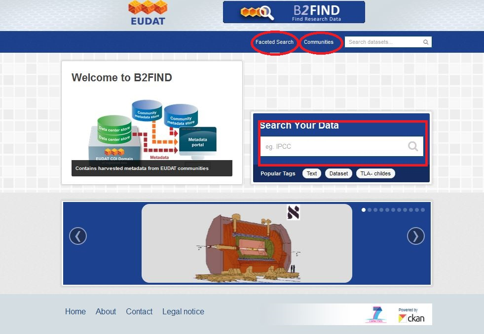
By clicking 'Communities' you get an overview about all communities that provide metadata to B2FIND.
There are two ways to start the search process and to get taken to the
search result page (fig. 2), with all available datasets listed on the right side and the
interface to several search and filter functionalities in the
navigation bar on the left side :
- By clicking 'Faceted Search'
- By pressing the magnification glass in one of the two free text fields 'Search your data' or 'Search datasets ...', with or without entering some text to be searched for.
Freee Text Search
As in the entry page shown in fig. 1, as well the main search page provides a "Google-like" free text search that basically works you with an input box where you can type your query.Full Text Search
You would usually simply type the keywords you are interested in and hit return. For example, if you are interested in documents or datasets on Foraminifera and you know that somebody with lastname Schiebel did something with it you would type
foraminifera schiebeland get this result:
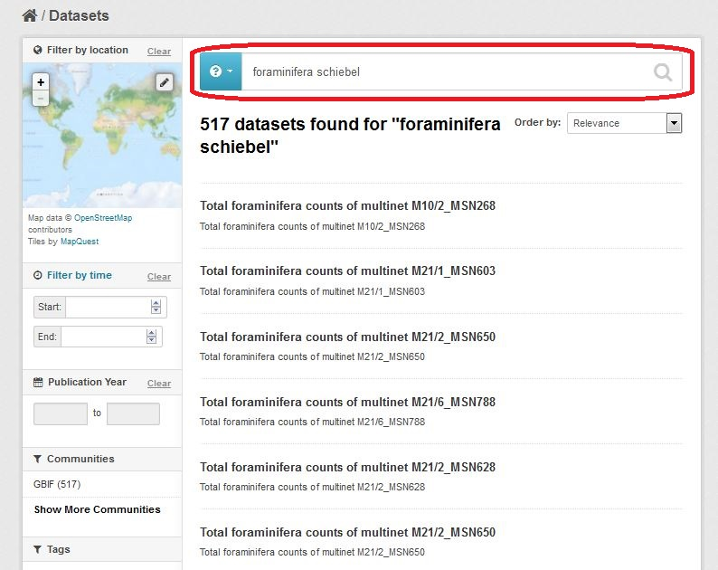
Facets
You may use the Free text Search Field as well to search for certain 'facets'
by using a colon. Facets are searchable categories. Please have a look at the next section for a detailed explanation of the interfaces to smart search functionalities in the navigation bar.
Here we only address the possibility to search for facets via the 'Free Text Search Field'.
For example you may find all resources that are originated from the discipline Biology by typing
Discipline:Biology
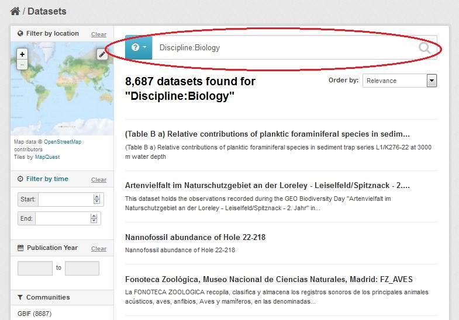
A full list of facets, which can be searched for in the B2FIND catalog, and their description is found in the user documentation in the section Metadatafielddefinitions. Please note that this search method is case intensive and requires accurate spelling. E.g. typing
discipline:Biologywill lead to no result, because there exists no facet discipline with small letter d.
Combined Search
In order to specify your search you may combine several different search methods. With the Boolean Operators 'and' and 'or' you can add or replace and exclude keywords or facets. Regarding our example you may search for all resources within the discipline Biology that include the word foraminifera and have something to do with Mr Schiebel by typing a query like this:
Discipline:Biology AND foraminifera AND schiebel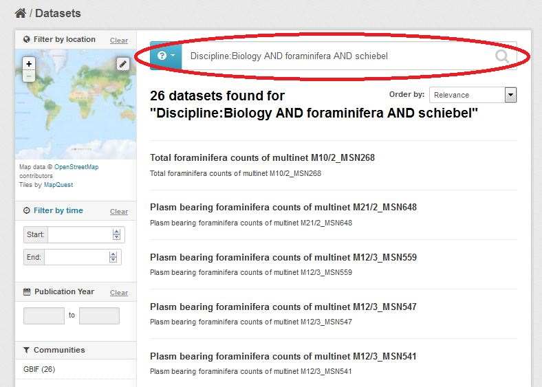
Faceted Search
The Facetted Search interface provides you with options to filter your search by chosing 'facets'. This tool may help you to narrow down the search results for your specific search demands. Besides usual facets like 'Creator', 'Language' or 'Publisher' B2FIND provides a geolocation search and two kinds of search for date and time:
- 'Filter by time' search, i.e. search for all dataests which cover a choosen time period.
- Selection of 'Publication Year', i.e. the year the dataset is 'published' in.
Filter by location
| In the worldmap widget in the left upper corner you can select a region by drag and drop. This triggers a search for all datasets their spatial extention has an intersection with the selected region.
1. Clear possibly previous search request by clicking the button 'Clear' in the 'Filter by location' interface in the navigation bar. |
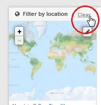 |
|
2. Selection of a region from the world map 2.a Click on the 'Draw a rectangle' button in the right upper corner of the worldmap wiget to start the spatial selection. |
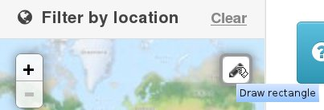 |
| 2.b Drag with the mouse over the wished spatial selection, the rectangel´s borders will be marked red. Finally press the 'Apply' button to excecute the search request. | 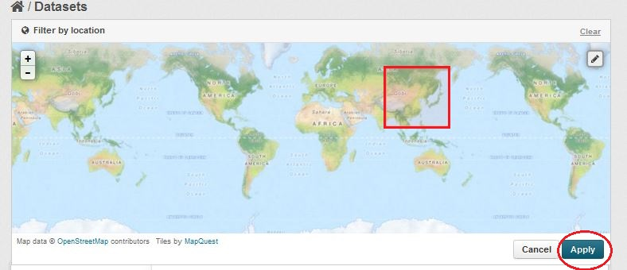 |
| 3. Search result: If excecution of the query is finished, all datasets whose spatial extention has an overlap with the selected region are listed in the right panel. | 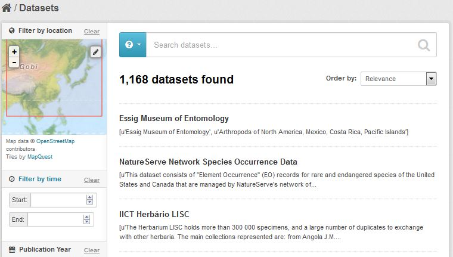 |
Filter by time
With the search widget 'Filter by time' you can select a time period the research data are related to by zooming in date and time histograms as described in the following.
| 1. Clear possibly previous search request by clicking the 'Clear' button of the 'Filter by time' interface in the navigation bar. | 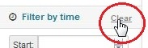 |
| 2. Clicking the button 'Filter by time' in the navigation panel opens the time line chart. | 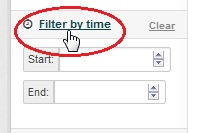 |
| 2.a Select a base periode by dragging the mouse with pressed left in the 'histogram' at the bottom. This causes the openening of the datasets/time diagram over the choosen period on the upper part of the chart. | 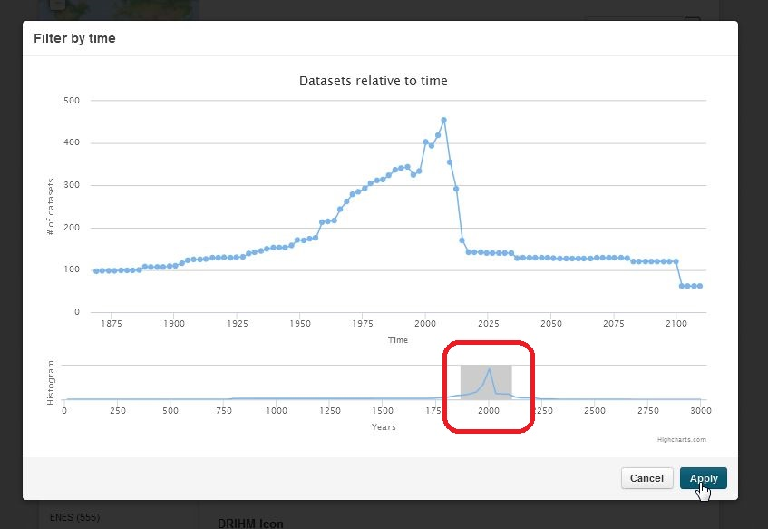 |
|
2.b Zooming in time: 'Drag and drop' with the left mouse button hold over a time interval in the upper time graph (zoomed part is shown). 2.c Repeat zooming until the desired section is shown in the chart. 2.d Reset the last zoom by clicking the button 'Reset zoom'. |
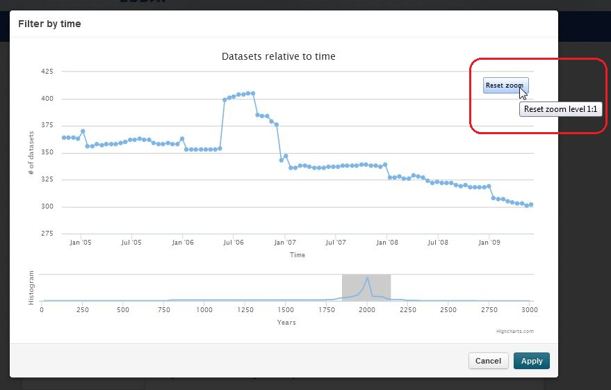 |
|
3. Select a time interval by holding "Ctrl" (Win/Linux) or "Cmd" (Mac) down and clicking on two points (start and end time) in the chart line. Close the timeline chart by clicking on 'Apply'. |
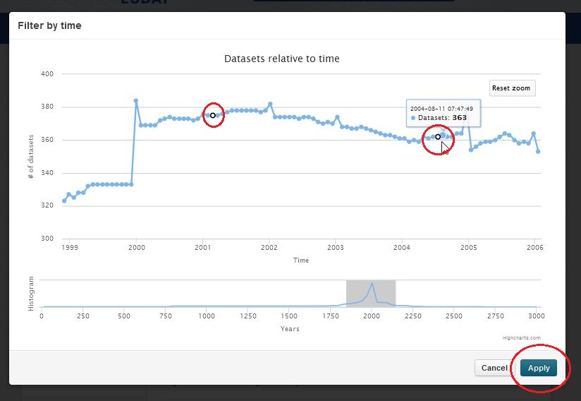 |
|
4. Up to now the search request is applied but not executed. To perform the search you must click on the loup within the free text search field. The amount of datasets that are shown is reduced and adapted to the chosen timeperiod, this period is displayed on the left side timeboxes as well. |
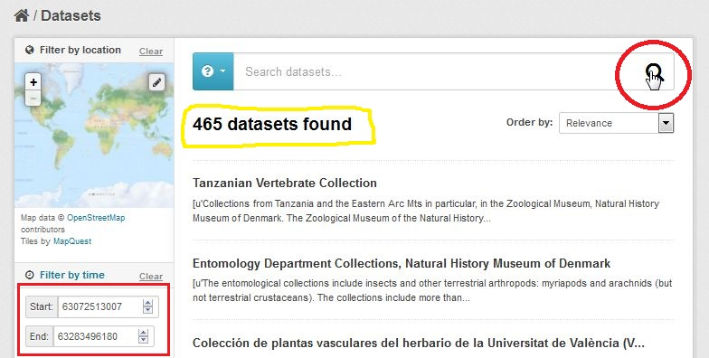 |
| 5. Please note that the timeperiod is displayed in 'Seconds since/before Christ'. For a better understanding the real date is displayed if you mouse-over the digits. | 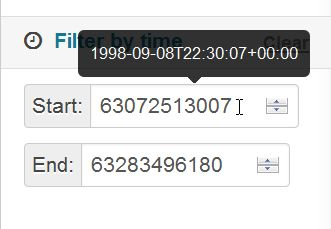 |
Filter by Publication Year
With the search widget 'Publication Year' you can search for datasets that are published within a certain period of time - this does not automatically correspond with the timeline the data itself cover.
| 1. Clear possibly previous search request by clicking the 'Clear' button of the 'Publication Year' interface in the navigation bar. | 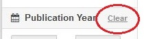 |
|
2. Select a period of publishing years 2.a Select a start year: Click on the left text field in the interface 'Publication Year'. This results in opening a select panel showing the years of the current decade. By clicking on the '<<' or the '>>' button you can switch to the previous or subfollowing decade. Finally select the wished start year by clicking on it in the decadal panel. This will apply the chosen Year for the search. |
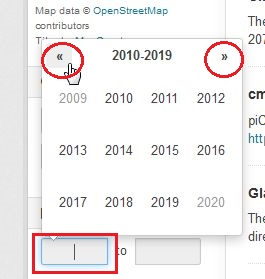 |
| 2.b Select an end year: Click on the right text field in the interface 'Publication Year'. This results in opening a select panel showing the years of the current decade. By clicking on the '<<' or the '>>' button you can switch to the previous or subfollowing decade. Finally select the wished end year by clicking on it in the decadal panel.
This selection will submit the search request. |
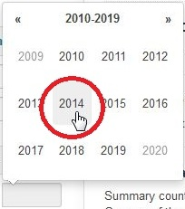 |
| 3.Search result: If execution of the query is finished, all datasets that are published within the choosen years are listed in the right panel. |  |